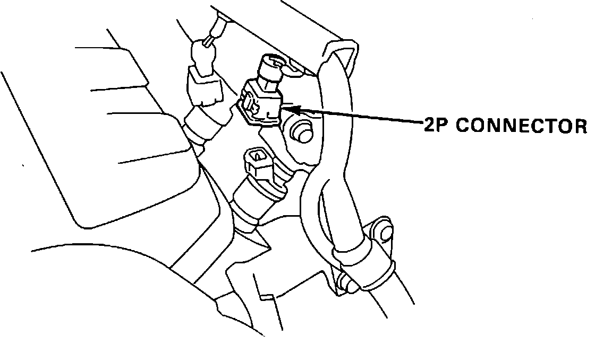

Fuel Injector: Testing and Inspection
Code 16 indicates a malfunction in the fuel injector circuit.1. With ignition off, remove HAZARD fuse from the positive battery cable end for 10 seconds to reset ECU.
2. With engine running, observe diagnostic LED.
Flashes code 16, proceed to step 4.
Does not flash, proceed to next step.
3. Malfunction is intermittent, check connections at ECU, injector resistor and fuel injectors. End of test.
Fuel Injector Testing:

4. Remove injector connectors.
5. Measure resistance across injector terminals on all injectors.
1.5 to 2.5 ohms, proceed to next step.
Not 1.5 to 2.5 ohms, replace injector(s). End of test.
6. Turn ignition on.
Fuel Injector Harness Connector:

7. Measure voltage between RED/BLK terminal of each injector connector and ground.
Battery voltage, proceed to step 13.
Not battery voltage, proceed to next step.
8. Turn ignition off.
9. Disconnect injector resistor connector.
10. With ignition on, measure voltage between YEL/BLK wire and ground.
Battery voltage, proceed to step 12.
Not battery voltage, proceed to next step.
11. Repair open YEL/BLK wire between injector resistor and main relay. End of test.
12. Check for open RED/BLK wire between injector and resistor. If wire checks good, replace injector resistor. End of test.
13. Measure voltage across each injector connector.
Battery voltage, proceed to next step.
Not battery voltage, proceed to step 18.
14. Disconnect ECU connector A.
15. Measure voltage across each injector connector.
Battery voltage, proceed to next step.
Not battery voltage, proceed to step 17.
16. Repair short in A1, A3, A5 or A7 between ECU terminals and injectors. End of test.
17. Replace electronic control unit.
Fuel Injector Testing:

18. With ignition off, install test harness between ECU and connector. If test harness is not available, carefully backprobe wires at ECU connector.
19. Turn ignition on.
20. Measure individually the voltage between A2 and the following terminals.
^ A1 Injector #1
^ A3 Injector #2
^ A5 Injector #3
^ A7 Injector #4
Battery voltage, proceed to step 22.
Not battery voltage, proceed to next step.
21. Repair open in wire not showing battery voltage, between ECU and injector. End of test.
22. Replace electronic control unit.